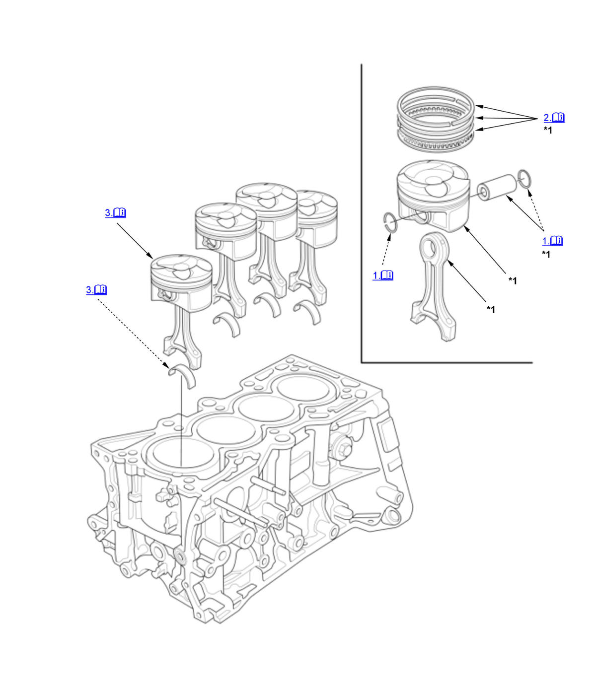

Piston, Ring, Pin, and Connecting Rod Removal and Installation (K20C1) (2017 2018 2019 2020 2021): Installation: Procedure
Numbered call-outs in figure pertain to list numbers in following procedure.

Courtesy of HONDA, U.S.A., INC. |
Detailed information, notes, and precautions |
| *1 | These parts have inspection items. |
- Piston Pin - Install
1. Install a piston pin snap ring (A) only on one side. 2. Coat the piston pin bore in the piston, the bore in the connecting rod, and the piston pin with new engine oil.
3. Heat the piston to about 158°F (70°C). 4. Assemble the piston (A) and the connecting rod (B). NOTE: Align the arrow (C) with the groove (D) direction on the connecting rod as shown.
5. Install the piston pin (E).
6. Install the remaining snap ring (F).
7. Turn the snap rings in the ring grooves until the end gaps are positioned at the bottom of the piston.
- Piston Ring - Install
1. Install the piston rings as shown. The top ring (A) has a 1R mark, and the second ring (B) has a 2R mark. The manufacturing marks (C) must be facing upward. 2. Rotate the rings in their grooves to make sure they do not bind. 3. Position the ring end gaps as shown.
4. After installing a new set of rings, measure the ring-to-groove clearances.
- Piston/Connecting Rod Assembly - Install
1. Remove the connecting rod bearing caps. Check that the bearing is securely in place. 2. Apply new engine oil to the piston, the inside of the ring compressor, and the cylinder bore, then attach the ring compressor to the piston/connecting rod assembly.
3. Position the piston/connecting rod assembly with the arrow (A) facing the cam chain side of the engine block.
4. Position the piston/connecting rod assembly in the cylinder, and tap it in using the wooden handle of a hammer (A). Push down on the ring compressor (B) to prevent the rings from expanding before entering the cylinder bore. 5. Stop after the ring compressor pops free, and check the connecting rod-to-rod journal alignment before pushing the piston into place.
- Crankshaft - Install